- Статистические ошибки при проверке гипотез
- Мощность статистического теста
- A priori анализ мощности, оценка величины эффекта
- Post hoc анализ мощности
- Как влиять на мощность тестов
Экономим силы с помощью анализа мощности
Вы сможете
- дать определение ошибок I и II рода, и графически изобразить их отношение к мощности теста
- оценивать величину эффекта и необходимый объем выборки по данным пилотного исследования
- загружать данные из .xls в R
- строить гистограммы и боксплоты с помощью
ggplot2 - сравнивать средние значения при помощи t-критерия, интерпретировать и описывать результаты
- расчитывать фактическую мощность теста
Статистические ошибки при проверке гипотез
Типы ошибок при проверке гипотез
| H0 == TRUE | H0 == FALSE | |
|---|---|---|
| Отклонить H0 | Ошибка I рода Ложно-положительный результат | Верно Положительный результат |
| Сохранить H0 | Верно Отрицательный результат | Ошибка II рода Ложно-отрицательный результат |
Вероятности гипотез
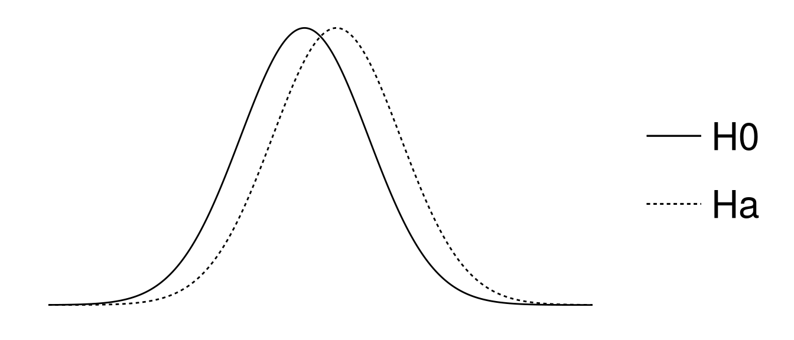
Типы ошибок при проверке гипотез
| H0 == TRUE | H0 == FALSE | |
|---|---|---|
| Отклонить H0 | Ошибка I рода Ложно-положительный результат | Верно Положительный результат |
| Сохранить H0 | Верно Отрицательный результат | Ошибка II рода Ложно-отрицательный результат |
Ошибки I рода
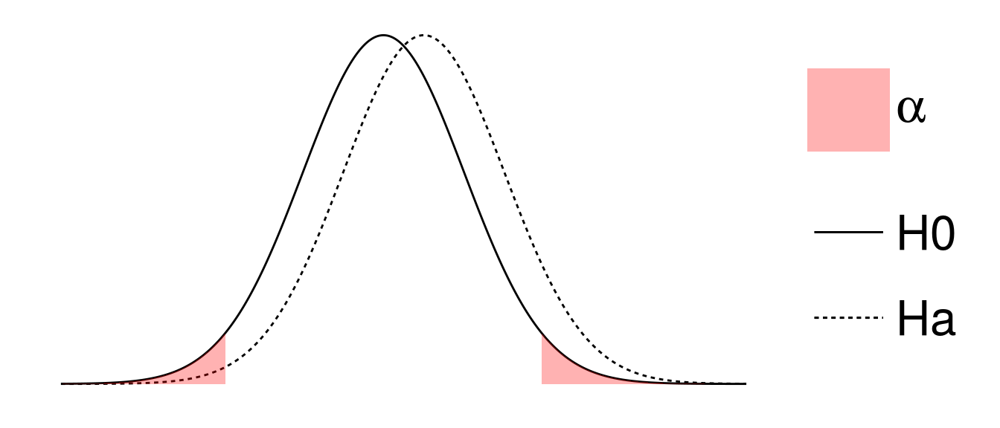
Типы ошибок при проверке гипотез
| H0 == TRUE | H0 == FALSE | |
|---|---|---|
| Отклонить H0 | Ошибка I рода Ложно-положительный результат | Верно Положительный результат |
| Сохранить H0 | Верно Отрицательный результат | Ошибка II рода Ложно-отрицательный результат |
Ошибки II рода
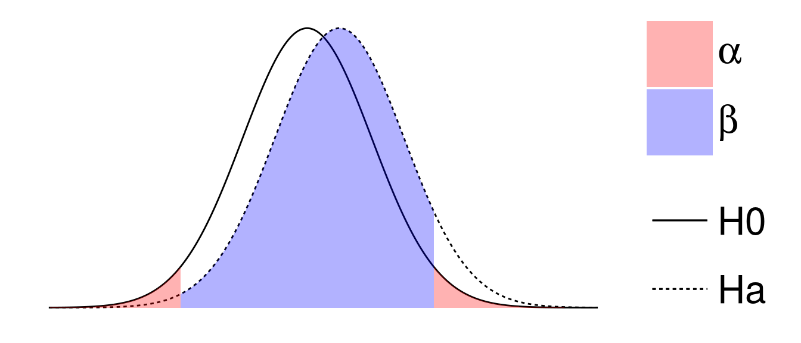
Типы ошибок при проверке гипотез
| H0 == TRUE | H0 == FALSE | |
|---|---|---|
| Отклонить H0 | Ошибка I рода Ложно-положительный результат | Верно Положительный результат |
| Сохранить H0 | Верно Отрицательный результат | Ошибка II рода Ложно-отрицательный результат |
Мощность теста - способность выявлять различия \(Power = 1 - \beta\)
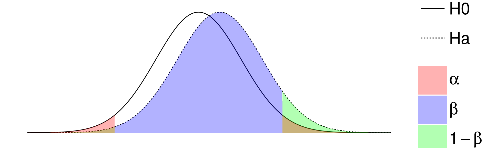
Анализ мощности
- какой нужен объем выборки, чтобы найти различия с разумной долей уверенности?
- различия какой величины мы можем найти, если известен объем выборки?
- смогли бы мы найти различия при помощи нашего эксперимента (\(\alpha\), \(n\)), если бы величина эффекта была \(X\)?
A priory анализ мощности
Пример: Заповедник спасает халиотисов*

Haliotis rubra
Лов халиотисов (коммерческий и любительский) запретили, организовав заповедник.
Стало ли больше моллюсков через несколько лет? (Keough, King, 1991)
- Данные из Quinn, Keough, 2002, Box 9-5, Fig 9-7; фото: Des Beechey - Seashells of New South Wales; bie.ala.org.au
A priori анализ мощности
Что нужно
тест
уровень значимости
желаемая мощность теста
ожидаемая величина эффекта
- \(t\)-критерий
\(alpha = 0.05\)
P = 80%
?
Величина эффекта

Яков Коэн
\(d\) Коэна (Cohen's d)
\[d = \frac{\bar \mu_1 - \bar \mu_2}{\sigma}\]
Как оценить стандартное отклонение для расчета величины эффекта?
\[d = \frac{\bar \mu_1 - \bar \mu_2}{\sigma}\]
- как среднеквадратичное стандартное отклонение (\(d\) Коэна)
\(d = \frac {|\bar x_1 - \bar x_2|} { \sqrt {\frac {s_1^2 + s_2^2 } {2} }}\)
- как обобщенное стандартное отклонение (\(g\) Хеджа)
\(g = \frac {|\bar x _{1} - \bar x _{2}|} { \sqrt {\frac {(n_{1} - 1) s_1^2 + (n_{2} - 1) s_{2}^2 } {n_{1} + n_{2} - 2} } }\)
Как оценить ожидаемую величину эффекта?
\[d = \frac{\bar \mu_1 - \bar \mu_2}{\sigma}\]
- Варианты:
- Пилотные исследования
- Литература
- Общебиологические знания
- Технические требования
Величина эффекта из общих соображений
(Cohen, 1982)
сильные, умеренные и слабые эффекты
library(pwr) cohen.ES(test = "t", size = "large")
## ## Conventional effect size from Cohen (1982) ## ## test = t ## size = large ## effect.size = 0.8
Рассчитайте
величину умеренных и слабых эффектов для t-критерия
library()
cohen.ES()
Подсказка: обозначения можно посмотреть в файлах справки
help(cohen.ES)
?cohen.ES
cohen.ES # курсор на слове, нажать F1
Величина эффекта из пилотных данных
\[d = \frac{\bar \mu_1 - \bar \mu_2}{\sigma}\]
\({\sigma}\) - cтандартное отклонение плотности халиотисов:
- Плотность крупных халиотисов на \(50 м^2\) была \(\bar x = 47.5\), \(SD = 27.7\)
\({\bar \mu_1 - \bar \mu_2}\) - cредний вылов халиотисов в год:
- Масса выловленных коммерческим способом + данные о размерах -> численность -> плотность
- Предположили, что коммерческий лов и любительский лов равны
- Коммерческий лов = 11.6 экз. \(м^{-2}\)
- Коммерческий + любительский лов = 23.2 экз. \(м^{-2}\)
Данные для анализа мощности собраны
alpha <- 0.05 power <- 0.80 sigma <- 27.7 # варьирование плотности халиотисов diff <- 23.2 # ожидаемые различия плотности халиотисов effect <- diff/sigma # величина эффекта effect
## [1] 0.838
Функции для анализа мощности t-критерия
- при одинаковых объемах групп
pwr.t.test() - при разных объемах групп
pwr.t2n.test()
Считаем объем выборки
pwr.t.test(n = NULL, d = effect, power = power, sig.level = alpha,
type = "two.sample", alternative = "two.sided")
## ## Two-sample t test power calculation ## ## n = 23.4 ## d = 0.838 ## sig.level = 0.05 ## power = 0.8 ## alternative = two.sided ## ## NOTE: n is number in *each* group
- Чтобы с вероятностью 0.8 выявить различия плотности халиотисов в местах, где лов разрешен и запрещен, нужно обследовать по 24 места каждого типа, если мы верно оценили величину эффекта.
Рассчитайте
сколько нужно обследовать мест, чтобы обнаружить слабый эффект с вероятностью 0.8, при уровне значимости 0.01
cohen.ES()
pwr.t.test()
Решение
cohen.ES(test = "t", size = "small")
## ## Conventional effect size from Cohen (1982) ## ## test = t ## size = small ## effect.size = 0.2
pwr.t.test(n = NULL, d = 0.2, power = 0.8, sig.level = 0.01,
type = "two.sample", alternative = "two.sided")
## ## Two-sample t test power calculation ## ## n = 586 ## d = 0.2 ## sig.level = 0.01 ## power = 0.8 ## alternative = two.sided ## ## NOTE: n is number in *each* group
Пример: Поддержание равновесия

grey bird
В каком возрасте сложнее поддерживать равновесие, если вы сосредоточены на чем-то другом?
9 пожилых людей (6 мужчин и 3 женщины) и 8 молодых мужчин просили стоять на измерительной платформе. В ответ на неожиданный звук испытуемые должны были как можно быстрее нажать на кнопку. Платформа измеряла в мм насколько человек отклонялся вбок или вперед-назад.
- http://lib.stat.cmu.edu/DASL/Stories/MaintainingBalance.html; фото: grey bird by Angela Vincent on Flickr
Читаем данные из файла
Не забудте войти в вашу директорию для матметодов, например, так
# setwd("C:/Мои\ документы/mathmethR/) # в Windows
# setwd(/home/yourusername/mathmethR/) # в Linux
library(readxl)
bal <- read_excel(path = "data/balance.xlsx", sheet = 1)
str(bal) # Структура данных
## Classes 'tbl_df', 'tbl' and 'data.frame': 17 obs. of 4 variables: ## $ subject_no : num 1 2 3 4 5 6 7 8 9 1 ... ## $ forward_backward: num 19 30 20 19 29 25 21 24 50 25 ... ## $ side_side : num 14 41 18 11 16 24 18 21 37 17 ... ## $ age_group : chr "elderly" "elderly" "elderly" "elderly" ...
Вспомним, как обращаться с датафреймами
head(bal) # Первые несколько строк файла
## # A tibble: 6 × 4 ## subject_no forward_backward side_side age_group ## <dbl> <dbl> <dbl> <chr> ## 1 1 19 14 elderly ## 2 2 30 41 elderly ## 3 3 20 18 elderly ## 4 4 19 11 elderly ## 5 5 29 16 elderly ## 6 6 25 24 elderly
bal$side_side[1:3] # Первые три значения переменной side_side
## [1] 14 41 18
bal[12:14, c(1, 2, 4)] # 12-14 строки, 1, 2 и 4 столбцы
## # A tibble: 3 × 3 ## subject_no forward_backward age_group ## <dbl> <dbl> <chr> ## 1 3 17 young ## 2 4 15 young ## 3 5 14 young
Сделаем age_group фактором
bal$age_group <- factor(bal$age_group, levels = c("young", "elderly"),
labels = c("молодые", "пожилые"))
Посмотреть, что получилось, можно так
levels(bal$age_group)
## [1] "молодые" "пожилые"
Бокс-плот
Геом geom_boxplot
library(ggplot2) ggplot(data = bal, aes(x = age_group, y = forward_backward)) + geom_boxplot()
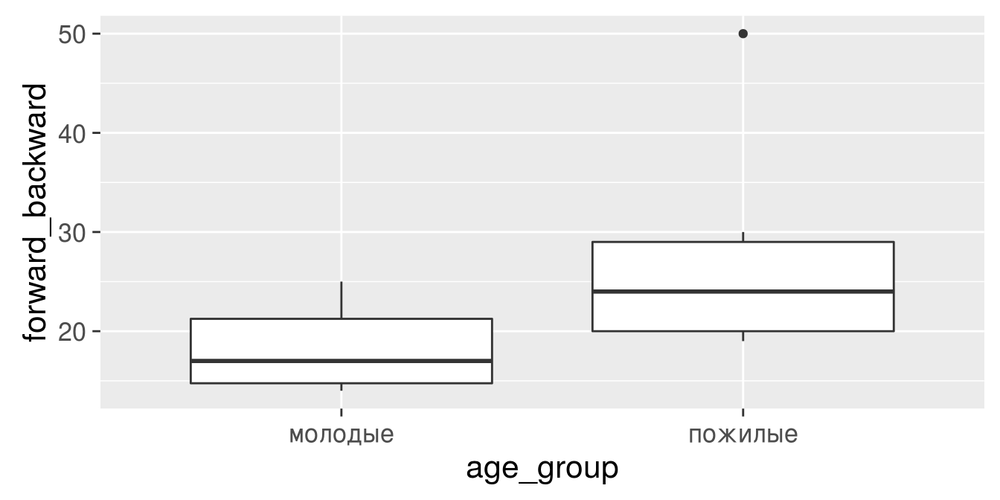
- Установите до конца сеанса другую тему
Решение
theme_set(theme_bw()) ggplot(data = bal, aes(x = age_group, y = forward_backward)) + geom_boxplot()
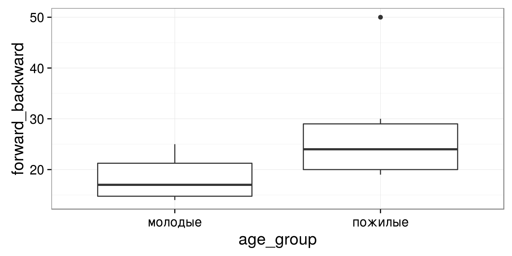
Раскрашиваем график
эстетика fill - заливка эстетика colour - контуры
ggplot(data = bal, aes(x = age_group, y = forward_backward, fill = age_group)) +
geom_boxplot()
ggplot(data = bal, aes(x = age_group, y = forward_backward, colour = age_group)) +
geom_boxplot()
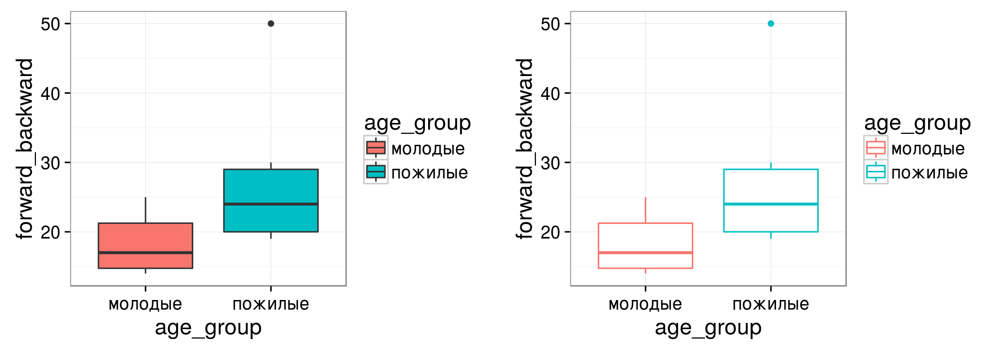
Задание
Добавьте - подписи осей - название графика - название легенды
Сохраните график в переменной
Решение
gg_balance <- ggplot(data = bal, aes(x = age_group, y = forward_backward)) +
geom_boxplot(aes(fill = age_group)) + labs(title = "Баланс тела",
x = "Возрастная группа", y = "Движение \nвперед-назад (мм)",
fill = "Возрастная \nгруппа")
gg_balance
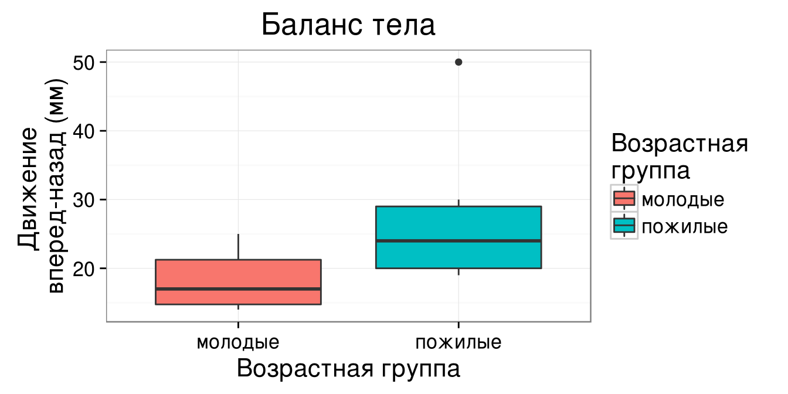
A priory анализ мощности по данным пилотного исследования
Представим, что перед нами данные пилотного исследования
Мы хотим сравнить возрастные группы
Нам нужно рассчитать величину эффекта по исходным данным. Для этого понадобится пакет effsize
Величина эффекта по исходным данным
library(effsize) effect <- cohen.d(bal$forward_backward, bal$age_group) effect
## ## Cohen's d ## ## d estimate: -1.07 (large) ## 95 percent confidence interval: ## inf sup ## -2.260 0.117
- как добыть значение величины эффекта?
Как добыть значение величины эффекта?
1. Как называется в структуре объекта элемент, где записана величина эффекта?
str(effect)
## List of 6 ## $ method : chr "Cohen's d" ## $ name : chr "d" ## $ estimate : Named num -1.07 ## ..- attr(*, "names")= chr "молодые" ## $ conf.int : Named num [1:2] -2.26 0.117 ## ..- attr(*, "names")= chr [1:2] "inf" "sup" ## $ conf.level: num 0.95 ## $ magnitude : Ord.factor w/ 4 levels "negligible"<"small"<..: 4 ## - attr(*, "class")= chr "effsize"
Как добыть значение величины эффекта?
2. Обращаемся к этому элементу по имени через $
effect$estimate
## молодые ## -1.07
3. Вычислим модуль, поскольку для pwr.t.test() эффект должен быть положительным
effect <- abs(effect$estimate)
Рассчитайте
объем выборки, чтобы показать различия между группами с вероятностью 0.8?
Вам понадобится функция pwr.t.test
Решение
library(pwr)
pwr.t.test(n = NULL, d = effect, power = 0.8, sig.level = 0.05,
type = "two.sample", alternative = "two.sided")
## ## Two-sample t test power calculation ## ## n = 14.7 ## d = 1.07 ## sig.level = 0.05 ## power = 0.8 ## alternative = two.sided ## ## NOTE: n is number in *each* group
- Нужна выборка 15 человек в каждой группе, чтобы с вероятностью 0.8 обнаружить различия амплитуды качания вперед-назад.
Post hoc анализ мощности
Пример: Влияние витамина C на рост зубов у морских свинок

20 морским свинкам давали витамин С в виде апельсинового сока или аскорбиновой кислоты и измеряли рост зубов.
- фрагмент данных из McNeil, D. R. (1977) Interactive Data Analysis. New York: Wiley; фото: www.ag.ndsu.edu
Открываем данные
teeth <- read_excel("data/teeth.xlsx", sheet = 1)
str(teeth)
## Classes 'tbl_df', 'tbl' and 'data.frame': 20 obs. of 3 variables: ## $ len : num 23.6 18.5 33.9 25.5 26.4 32.5 26.7 21.5 23.3 29.5 ... ## $ supp: chr "VC" "VC" "VC" "VC" ... ## $ dose: num 2 2 2 2 2 2 2 2 2 2 ...
Задание
Проверьте при помощи t-критерия будет ли различаться размер зубов при разных способах употребления
Решение
t.test(len ~ supp, data = teeth)
## ## Welch Two Sample t-test ## ## data: len by supp ## t = -0.05, df = 10, p-value = 1 ## alternative hypothesis: true difference in means is not equal to 0 ## 95 percent confidence interval: ## -3.80 3.64 ## sample estimates: ## mean in group OJ mean in group VC ## 26.1 26.1
- Достоверных различий размеров зубов не обнаружено (t-критерий, p > 0.05)
Post hoc анализ - когда различий не нашли
Какова была реальная величина эффекта?
Хватило ли нам мощности, чтобы выявлять такие незначительные различия?
Для post hoc анализа нужно знать
- тест (\(H _0\) отвергнута!) — t-критерий
- уровень значимости — α = 0.01
- фактический объем выборки — 10
- фактическая величина эффекта — ?
- реальная мощность теста - ?
Сделаем post hoc анализ мощности
effect_real <- cohen.d(teeth$len, teeth$supp)
effect_real <- abs(effect_real$estimate)
pwr.t.test(n = 10, d = effect_real,
power = NULL, sig.level = 0.01,
type = "two.sample",
alternative = "two.sided")
## ## Two-sample t test power calculation ## ## n = 10 ## d = 0.0206 ## sig.level = 0.01 ## power = 0.0101 ## alternative = two.sided ## ## NOTE: n is number in *each* group
- Для выявления слабых эффектов (d = 0.02) мощность оказалась недостаточной (P = 0.01)
Как влиять на мощность теста?
Мощность зависит
- от объема выборки
- от величины эффекта
- от уровня значимости
Чем больше объем выборки—тем больше мощность
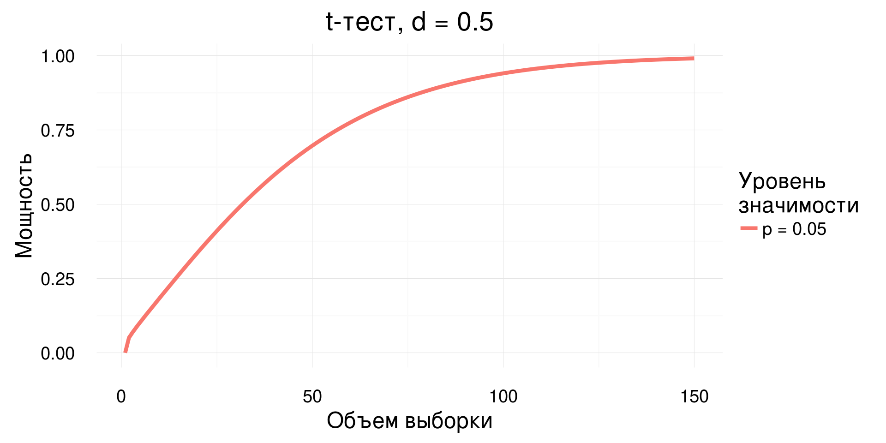
Чем больше уровень значимости—тем больше мощность
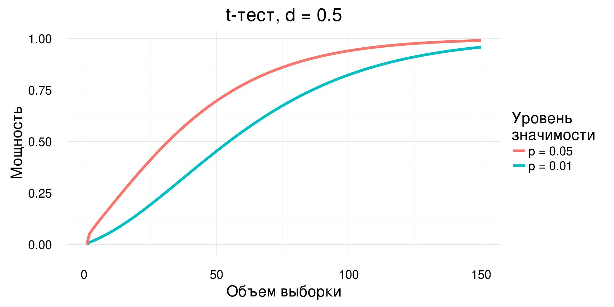
Чем больше величина различий—тем больше мощность
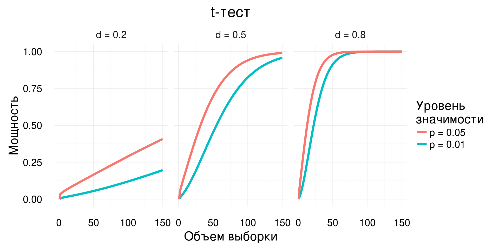
Скажите
Какие из факторов, влияющих на мощность теста, мы не можем контролировать?
- Мы не можем контролировать внешние факторы
- величину эффекта (\(ES\))
- фоновую изменчивость (\(\sigma^2\))
Каким образом можно повлиять на мощность теста?
- Мощность теста можно регулировать, если
- изменить число повторностей
- выбрать другой уровень значимости (\(\alpha\))
- определиться, какие эффекты действительно важны (\(ES\))
Take home messages
- Контролируем статистические ошибки:
- чтобы не находить несуществующих эффектов, фиксируем уровень значимости
- чтобы не пропустить значимое, рассчитываем величину эффекта, объем выборки и мощность теста
- когда не обнаружили достоверных эффектов, оцениваем величину эффекта и мощность теста
- Способность выявлять различия зависит
- от объема выборки,
- от уровня значимости
- от величины эффекта
Дополнительные ресурсы
- Quinn, Keough, 2002, pp. 164-170
- Open Intro to Statistics: 4.6 Sample Size and Power, pp. 193-197
- Sokal, Rohlf, 1995, pp. 167-169.
- Zar, 1999, p. 83.
- R Data Analysis Examples - Power Analysis for Two-group Independent sample t-test. UCLA: Statistical Consulting Group.
- R Data Analysis Examples - Power Analysis for One-sample t-test. UCLA: Statistical Consulting Group.
- FAQ - How is effect size used in power analysis? UCLA: Statistical Consulting Group.